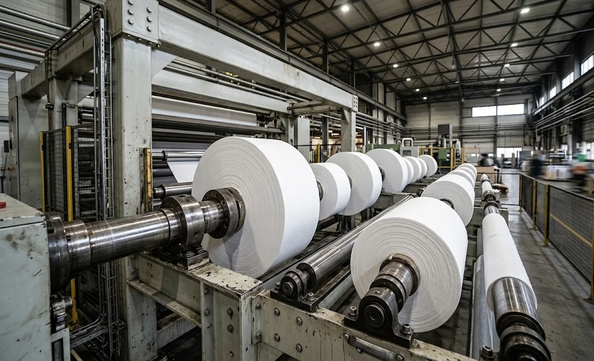
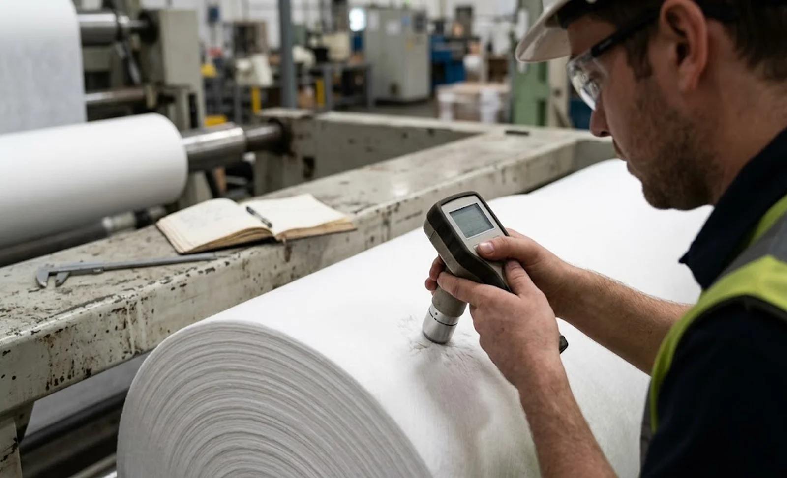

Published October 10, 2026 | By HDPTH Technical Editorial Team

Roll quality complaints rarely mention the shaft. They mention soft centres, hard edges, telescoping rolls and finished rolls that will not run straight on the customer’s unwind — all real symptoms of a shaft that bends under load. Deflection is not a defect of cheap machines only; it is physics that every design must answer, and it becomes decisive exactly where product value concentrates: wide webs and large roll diameters. A shaft that performs flawlessly on 600 mm rolls can ruin every roll at 1,200 mm. Buyers who understand this ask suppliers one question: “show me the deflection calculation for my maximum roll”. This guide explains why shafts bend, what it costs, and what to specify so the answer is engineering rather than apology.
Why rewind shafts deflect
The rewind shaft is a beam under load: roll weight, winding tension and its own mass, all distributed across a span between bearing points that grows with machine width. As the roll winds up, its weight increases roughly with the square of the diameter, while the shaft’s stiffness stays exactly what it was at the core. Deflection therefore accelerates through the wind — slowly at small diameters, quickly near full roll. Wide machines multiply the problem because the span grows without the section necessarily doing so. The winding method matters too: surface winding shares the load through a nip, while pure centre winding loads the shaft alone, as covered in the center versus surface winding comparison. The mechanics are simple, but the calculation must use your specific roll sizes — general shaft catalogue data will not do.
What deflection does to your rolls
A bowed shaft winds a bowed package: hardness follows the bow — edges hard, centre soft — repeating every wind. On multi-roll shafts, the rolls nearest the bearings take more torque than those in the middle — the situation the differential rewind guide addresses head-on. The visible defects follow: telescoping at the soft edge, starring where the core collapses under uneven radial load, out-of-round rolls and width-to-width quality differences across the machine. Because the pattern follows the bow position, repeatable defects at the same lateral positions on every roll set point at the shaft before the material, the tension settings or the operators.

Design options that manage deflection
Four countermeasures cover most situations, and they combine:
- Stiffer shaft section — larger diameter and higher-grade steel; deflection falls steeply with section stiffness for the same span and load.
- Differential rewind shafts — segmented friction cores let each roll slip to its own torque, absorbing both bow-induced torque imbalance and web thickness variation.
- Surface or centre-surface winding — a driven nip carries part of the roll weight, as covered in the winding method guide, dramatically unloading the shaft at large diameters.
- Mid-span or rider support — for very wide machines, an intermediate support or following roll cuts the effective span, the strongest lever of all.
Choose after seeing the numbers. The torque control architecture in our rewind torque guide interacts with the shaft choice: a differential shaft on a badly undersized beam still produces mediocre rolls, just more evenly.
Specifying the load case in the RFQ
The shaft question is answered in the RFQ or not at all. State the maximum roll diameter, weight and width for each shaft position; the winding tension profile from core to full roll; whether rolls are wound individually or in gangs; and the roll hardness uniformity you require across the width, referencing the measurement method in our roll hardness testing guide. Then require the supplier to deliver a deflection calculation for the maximum load case, stating the expected bow in millimetres at full roll, together with the countermeasures adopted. Also connect the request to roll handling: the unloading equipment in our roll unloading guide should be specified against the identical maximum case, or the shaft will be fine and the warehouse will be the bottleneck.
Verifying the choice at FAT and in production
Deflection is verifiable, so verify it. During the factory acceptance test, wind the largest roll the test material allows — ideally at the specified full diameter — and map roll hardness across the width and across the rolls on the shaft. Compare the pattern against the supplier’s calculation and the hardness criteria in your contract; measure runout and vibration at operating speed, as our vibration and noise guide recommends. Repeat the map during commissioning on production material. If the edges wind hard in exactly the bow pattern the supplier calculated, the machine is behaving as engineered; if worse, the load case was wrong and your warranty terms are where this belongs.
Buying for wide webs or large rolls?
Send HDPTH your maximum roll diameter, weight and width. We will return the rewind shaft design with the deflection calculation attached — and demonstrate roll hardness uniformity at full roll during the FAT.
Submit Your Project InquiryFrequently asked questions
Why do rewind shafts deflect more as the roll grows?
The shaft carries the growing roll weight and winding load across a wide unsupported span, and the load scales with roll diameter squared while shaft stiffness stays constant. Deflection therefore grows steeply toward the end of the roll. A shaft straight at 300 mm OD can be visibly bent at 1,200 mm OD on a wide machine — so the load case at maximum roll size, not at the core, decides the shaft design.
What defects does shaft deflection cause in finished rolls?
A bowed shaft winds harder at the ends than in the middle, so hardness variations follow the bow: soft centres, hard edges and, on multi-roll shafts, rolls that take unequal share of the torque. The visible results are telescoping, starring and out-of-round rolls, plus width-to-width hardness differences across the machine. Because the defect follows the bow position, the same shaft can produce perfect short rolls and rejected full rolls.
Which design options manage deflection best?
In order of impact: a stiffer shaft — larger section diameter and higher-grade material — for a given span; differential rewind shafts, whose segmented cores tolerate the residual bow; surface or centre-surface winding where the nip shares the load; and for very wide machines, mid-span or rider supports. Specify after calculating the actual load case: shaft choice without a deflection calculation is a guess with a part number.
What should the RFQ say about rewind shaft loads?
State the maximum roll diameter, weight and width per shaft position, the winding tension profile, whether rolls are wound individually or in gangs, and the required roll hardness uniformity. Require the supplier to provide the deflection calculation for the maximum load case and to state the expected deflection in millimetres at full roll. That single number, with its calculation, is the best early indicator of whether the machine is engineered for your roll sizes.
How is deflection verified before acceptance?
Ask for a FAT run at maximum roll diameter — or as close as the test material allows — and measure roll hardness across the width and across each roll on the shaft. Review hardness maps against the acceptance criteria agreed in the contract, and check runout and vibration at speed. During commissioning, repeat the measurement on your production material; if the edges wind harder than the centre in the same bow pattern the supplier calculated, the design case was wrong.